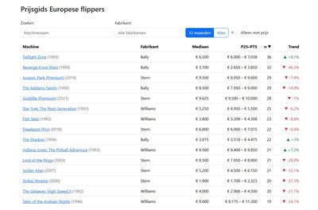
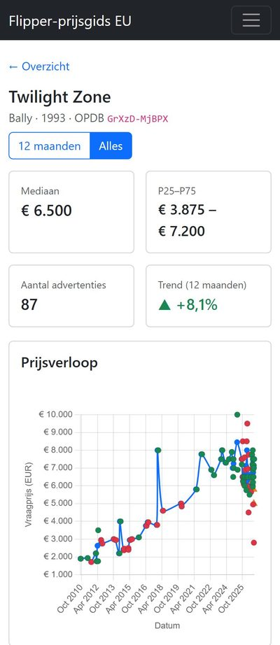

$ cd ~/projects/pinball-priceguide
> Pinball Price Guide_
Oct 2026 (Ongoing)
I was simply curious: what do pinball machines cost right now, what did they cost during COVID and before, and how much data could I gather to answer that? There are several price guides for the US, but not really for Europe, and prices here can differ a lot. The guide is built on asking prices, not on real sale prices, and the site says so on every machine page.
A pipeline reads ads in several languages and extracts the price, the currency, the location and the type of ad (machine, parts, wanted, virtual pinball). It then matches each ad to a specific machine and edition. Anything unsure goes to a review screen where I pick the right machine by hand. For the really difficult ads there is an optional LLM step.
Per machine the guide shows a typical price, a price range and a 12 month trend. Prices are followed over time and every change is stored, which gives a price history chart for every machine. Prices can also be split by country and by condition. At the moment it holds around 15,000 ads and prices for more than 460 machines.
The project has 2 major components:
- Backend: Django 5.2 with Django REST Framework, a pipeline of management commands (extraction, matching, statistics) and SQLite or PostgreSQL
- Frontend: Angular 22 with standalone components and signals, Bootstrap 5 and Chart.js for the charts
The backend is covered by pytest tests, and the matching rules are measured against the labels I gave in the review screen.


